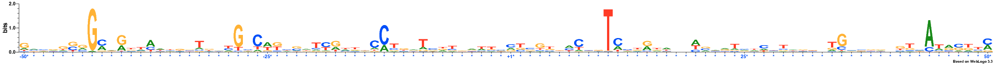
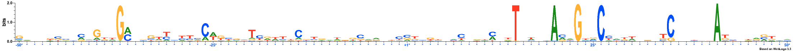
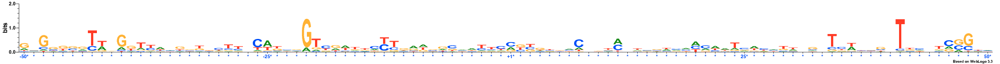
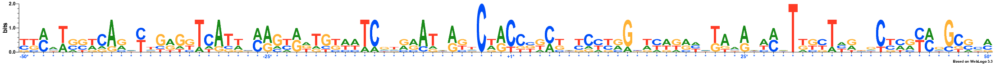
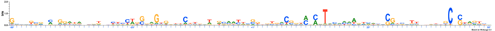
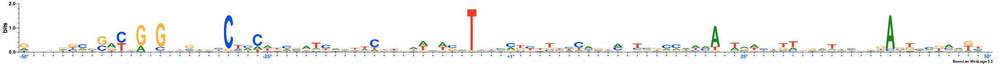

MODEL
Lambda: 0.0
Dataset structure: 1000 sequences with 100 features
Number of architectures in the best model: 14
Likelihood of best model: -177929.794132
Architecture 1: 0 sequences with 100 important features
No Sequences
Architecture 2: 150 sequences with 100 important features
Sequence logo for the important positions in architecture 2
Architecture 3: 1 sequences with 100 important features
Sequence logo for the important positions in architecture 3
Architecture 4: 127 sequences with 100 important features
Sequence logo for the important positions in architecture 4
Architecture 5: 0 sequences with 100 important features
No Sequences
Architecture 6: 95 sequences with 100 important features
Sequence logo for the important positions in architecture 6

Architecture 7: 261 sequences with 100 important features
Sequence logo for the important positions in architecture 7

Architecture 8: 121 sequences with 100 important features
Sequence logo for the important positions in architecture 8

Architecture 9: 1 sequences with 100 important features
Sequence logo for the important positions in architecture 9
Architecture 10: 113 sequences with 100 important features
Sequence logo for the important positions in architecture 10

Architecture 11: 6 sequences with 100 important features
Sequence logo for the important positions in architecture 11

Architecture 12: 66 sequences with 100 important features
Sequence logo for the important positions in architecture 12

Architecture 13: 0 sequences with 100 important features
No Sequences
Architecture 14: 59 sequences with 100 important features
Sequence logo for the important positions in architecture 14

Logo for the raw data

NOTE: All important positions in the logos are followed by an asterisk symbol and are coloured blue